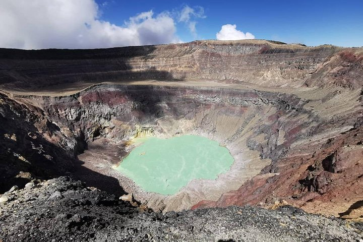

Departamento: SANTA ANA
Cabecera: Santa Ana
Municipios: 13
Extencion territorial: 408 km²
numero de habitantes: 272,554
Atracción turistica: Lago de Coatepeque
Santa Ana es una ciudad salvadoreña, cabecera del municipio, departamento, distrito y sede de la diócesis homónimos; y es la ciudad principal de la zona occidental, y segunda ciudad en importancia de El Salvador, ubicada a 64 km de la capital estatal, San Salvador
El municipio de Santa Ana tiene una población estimada de 264 091 habitantes para el año 2013, ocupando el segundo lugar en población. Para su administración se divide en 34 cantones y 312 caseríos, mientras que la propia ciudad se divide en 12 barrios y varias colonias.
La localidad celebra sus fiestas patronales durante las «Fiestas Julias», del 17 al 26 de julio, en homenaje a la Señora Santa Ana, patrona del departamento.
Departamento de Santa Ana es uno de los 14 en que se divide El Salvador y que pertenece a la zona occidental del país. La cabecera o ciudad principal de este departamento es la ciudad de Santa Ana, cuyo nombre lleva desde 1569. Su antiguo nombre era Sihuatehuacán. Oficialmente fue creado como departamento en 1855 durante la presidencia de José María San Martín.
Aunque hay registros arqueológicos que datan del período preclásico, la ciudad fue fundada alrededor del siglo V o VI, por los mayas, para luego ser ocupada por los pipiles, los cuales le dieron el nombre de Sihuatehuacan. Fue conquistada por los españoles durante el siglo XVI, y posteriormente perteneció a la Alcaldía Mayor de San Salvador y luego a la Intendencia de San Salvador. Ha formado parte del Estado salvadoreño, tanto en su etapa federal, como independiente
En 1894 ocurrió en la población la Revolución de los 44, que propició el golpe de estado contra el gobierno de Carlos Ezeta. Durante la época dorada del café, a principios del siglo XX, fue la ciudad más rica del país. Para el siglo XX, y en la década de los años 1980, Santa Ana se vio afectada por la Guerra Civil de El Salvador.9 Con la firma de los Acuerdos de Paz de Chapultepec en 1992 (que puso fin a 12 años de guerra) y con el inicio del tercer milenio, la localidad experimentó un aumento de la población urbana debido a la emigración de habitantes de las áreas rurales y una expansión urbana acelerada con la construcción de nuevas colonias.
Santa Ana posee una superficie territorial de 2023,2 kilómetros cuadrados y una población de 523,655 habitantes, según el censo de población de 2007. Se encuentra dividido 13 municipios.
A continuación encontrarás un listado de los 13 municipios de Santa Ana en los que se divide este departamento:
1. Candelaria de la Frontera
2. Chalchuapa
3. Coatepeque
4. El Congo
5. El Porvenir
6. Masahuat
7. Metapán
8. San Antonio Pajonal
9. San Sebastián Salitrillo
10. Santa Ana
11. Santa Rosa Guachipilín
12. Santiago de la Frontera
13. Texistepeque
Cada uno de los municipios mencionados anteriormente es gobernado por una alcaldía, la cual se encarga de velar por el bienestar de la población del mismo, así como también por la ejecución de obras de desarrollo.
El departamento de Santa Ana limita al norte con la república de Guatemala y parte del departamento de Chalatenango; al este con los departamentos de Chalatenango y La Libertad; al sur con el departamento de Sonsonate y al oeste con el departamento de Ahuachapán y la república de Guatemala.
El departamento de Santa Ana se encuentra a una altitud de entre 500 y 3000 metros sobre el nivel del mar.Y es surcado por tres cordilleras, las cuales son: Alotepeque-Metapán, Apanéca y Mita-Comecayo. Los volcanes más importantes son el volcán de Santa Ana o Ilamatepec 2,381 msnm y el volcán Chingo. Entre los cerros más importantes están el Cerro Verde 2030msnm, aunque en realidad se trata de un volcán extinto y el cerro Montecristo 2418msn. Los principales ríos del departamento son: el río lempa, el río Guajoyo y el río Suquiapa.
Dos lagos de gran importancia turística y económica se encuentran en el departamento de Santa Ana. El Lago de Güija ubicado cerca de Metapán y el Lago de Coatepeque que está ubicado en la parte sur de este departamento.
La ciudad cuenta con arquitectura antigua que data de por lo menos el siglo XIX, de esta arquitectura son consideradas como monumentos nacionales: el teatro, la catedral, alcaldía, y el Parque Kessels, ubicado al lado del teatro y en el cual se localizan los monumentos en honor a los músicos y compositores José Kessels (de origen holandés); todos ellos se encuentran alrededor del parque libertad, el cuál fue construido en 1890 por orden del presidente Francisco Menéndez en el lugar donde estaba ubicado la plaza pública de la ciudad (todas las poblaciones españolas construian en su centro una plaza pública que estaba rodeada de los edificios más importantes de la localidad, en esa plaza se ubicaba el mercado y el cuártel de la ciudad, este último sobre todo en tiempos en que no existía un ejército permanente), en este parque se ubican el monumento a la libertad y el monumento al músico santaneco David Granadino.
Entre los bienes culturales del país el sitio arqueológico Finca Rosita, la cual está ubicada en la periferia sur de la ciudad ciudad, y data del período preclásico y tiene entre sus estructuras una pirámide de 13 metros de altura.118 Además dentro de los sitios históricos del país, la ciudad contiene la casa en la que vivió el general y ex presidente Tomás Regalado donde actualmente se ubica el banco Agrícola, la casa del ex presidente Pedro José Escalón, así como otras mansiones de finales del siglo XIX o principios del siglo XX, y otras construcciones de diversa índole como el club atlético occidental (donde se ubica el Centro de Artes), la escuela José Mariano Méndez, Casino Militar Centroamericano, etc.
Principales lugares turisticos de Santa Ana: Lago de Coatepeque Turicentro Apuzunga Turicentro Sihuatehuacán Parque Nacional Cerro Verde Montecristo
La cultura de Santa Ana y de todo El Salvador es resulado de la influencia de los pobladores indígenas precolombinos y de la colonización española. La institución gubernamental que se encarga de preservar y promover la cultura en todo el país es la Secretaría de Cultura. Asimismo, la ciudad cuenta con su propia oficina descentralizada encargada de preservar y promover la cultura y el arte en todo el municipio: la Coordinadora de cultura, recreación, arte y educación (Culturarte).
Santa Ana destaca en producciones artesanales como la piñatería, hojalatería, floristería y ebanistería, entre otras. En cuanto a su gastronomía, Santa Ana cuenta, además de la gastronomía típica de todo el país, con su propio arte culinario conformado por dulces típicos llamados acitrones, los cuales son resultantes de la mezcla de varias clases de frutas, panela y azúcar.